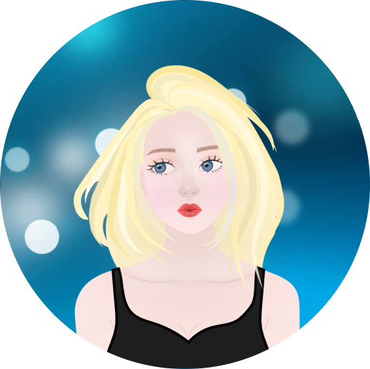
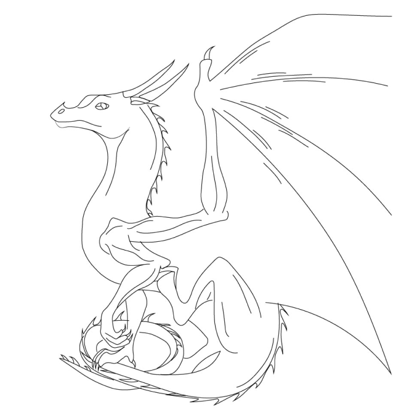
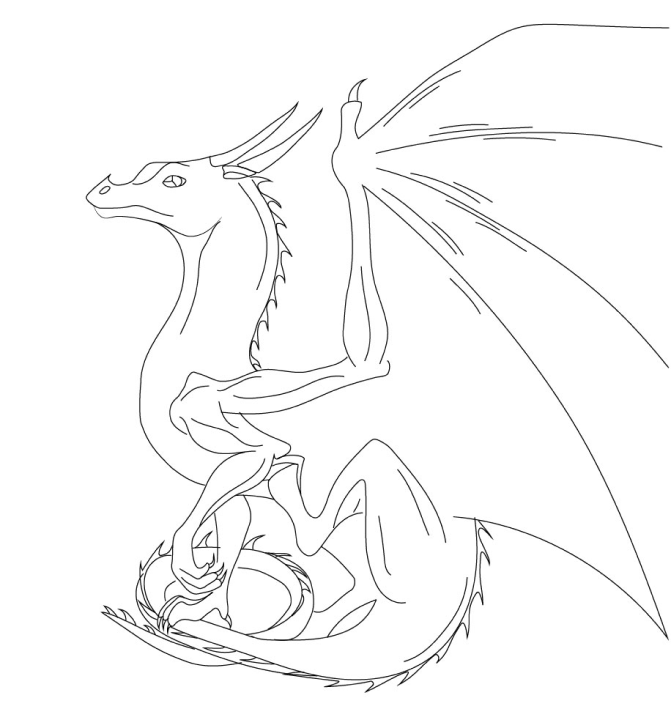
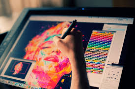

Мене звуть Лозанюк Катерина і я початківець в сфері веб-розробки, вже не перший рік цікавлюсь графічним та веб-дизайном
Про себе:
Мені 18 років, я з міста Житомир, але зараз живу й навчаюсь у місті Київ. Я студентка 2 курсу Національного авіаційного університету. Спочатку мріяла бути Front-End розробником, вивчала Html/Css, Bootstrap, пізніше взялася за JavaScript, TypeScript та фреймворк Angular. Але зрозуміла, що графічна частина мене приваблює набагато більше, тому вирішила спробувати себе в графічому дизайні. З самого початку карантину почала малювати векторні картинки в Illustrator (Доречі, картинка вище - це моя робота), потім зацікавилася веб-дизайном та почала малювати різні макети в своє портфоліо, чим і займаюсь станом на зараз.
Приклади моїх графічних робіт в Illustator:
 

Графічний дизайн

Графічний дизайнер спеціалізується на оформленні навколишнього середовища засобами графіки. Професія підходить тим, кого цікавить малювання та інформатика
Для успішної роботи в сфері графічного дизайнера важливі професійні вміння та навички, а також особливості особистого розвитку. Необхідно не тільки мислити креативно, але вміти працювати з великим масивом інформації, організовувати власний час, розставляти пріоритети, орієнтуватися на вимоги клієнта і знати тренди в професії.
Професійні вміння - це те, на що в першу чергу звертають увагу роботодавці. Тут від дизайнера потрібно розуміння основ композиції, вміння працювати з кольором, типографікою, необхідний досвід розробки веб-інтерфейсів, упаковки, фотографії, відеороликів. Для того, щоб втілити ідею в життя, необхідно знати основний пакет професійних програм, таких як Adobe Illustrator, Photoshop, InDesign, After Effects, програм для 3d редагування та відеомонтажу, а також розуміти технологічні процеси виробництва. Крім цього, в сучасному світі дуже важливим є знання англійської мови - вміння порозумітися з клієнтом, розуміння професійної літератури.
Переваги:
- Високий попит
- Достойна зарплатня
- Творчість
- Свій розклад
Недоліки:
- Висока конкуренція
- Постійне навчання
Мої навички: |
||
|
3D Stydio Max 🔵🔵◯◯◯ |
Adobe Photoshop 🔵🔵🔵🔵◯ |
|
|
Adobe Illustrator 🔵🔵🔵🔵🔵 |
Adobe InDesign 🔵🔵🔵◯◯ |
|
|
Фотография 🔵🔵🔵◯◯ |
Креативність 🔵🔵🔵🔵🔵 |
|
|
Figma 🔵🔵🔵🔵🔵 |
Відчуття кольору 🔵🔵🔵🔵🔵 |
|
|
Увага до деталей 🔵🔵🔵🔵◯ |
Розуміння трендів 🔵🔵🔵◯◯ |
|
Мої контакти:
☏ Номер телефону: +380982345091
✉ Електронна пошта: 6141031@stud.nau.edu.ua